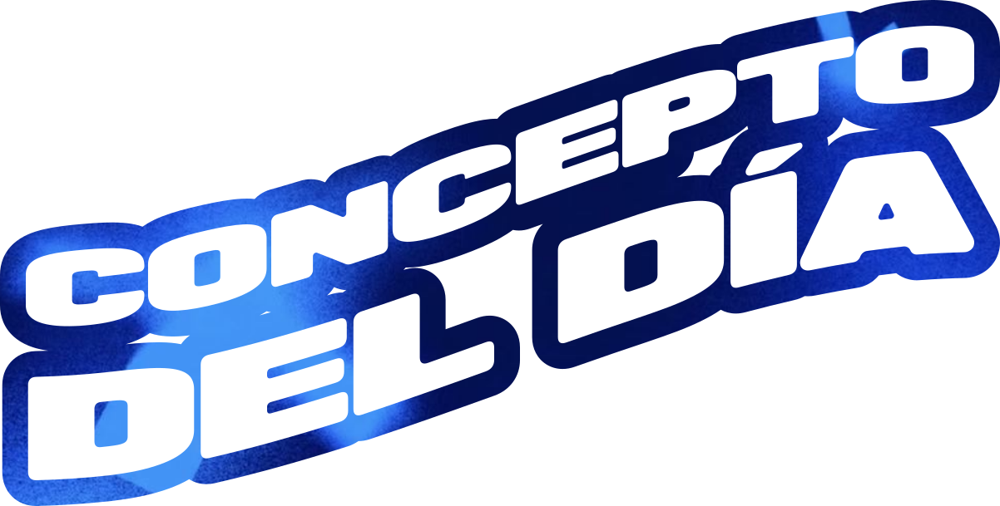

Adiviná el concepto de diseño de hoy.
Un concepto de diseño por día
¿Cómo se juega?
Hoy hay un solo concepto de diseño para adivinar, igual para todos.
- Escribí una palabra con tantas letras como casillas hay. Tenés 6 intentos.
- Azul: la letra está en su lugar. Crema: está, pero en otro lugar. Gris: no está.
- Cuanto antes lo saques, más puntos: hasta 1000.
- Una pista (la categoría y una definición corta) resta 100 puntos.
- Los puntos de cada día se suman en el ranking de la semana, de lunes a domingo.
0 pts
Nuevo concepto en …